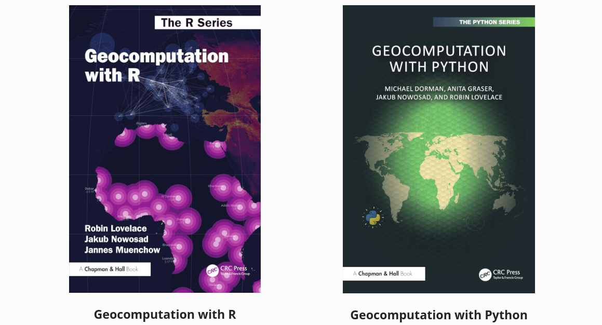
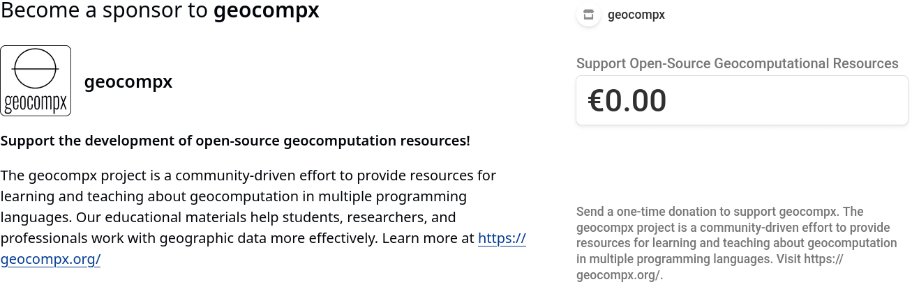

Support geocompx and the development of open-source geocomputation resources!
As 2024 comes to an end, we have things to celebrate in the geocompx community, including the completion of two books: the second edition of Geocomputation with R and the first edition of Geocomputation with Python. Both books are open-source, can be accessed by anyone for free online, and will be on sale soon (watch this space). We are proud of the work we have done, grateful for the contributions we have received, and excited about the future.

We think that open source and open access resources are essential for the development of the field of geocomputation. They allow people to learn about geocomputation, improve their skills, and solve real-world problems. They also enable researchers to share their work, collaborate with others, and build on existing knowledge. In short, we believe that open-source geocomputational resources can make the world a better place.
However, creating, maintaining, and contributing to such resources is time-consuming and can be hard to sustain, especially for newcomers to open source software development who are likely to be younger and less financially secure.1

Now, we opened two ways to support the geocompx project financially:
- First, you can donate to the project using the following link: donate.stripe.com/4gweWl94Q9E35AQ6oo.
- Second, you can sponsor the project on GitHub at github.com/sponsors/geocompx.
The donations and sponsorships will be used to support the development and maintenance of the project. Our ideas for using the funds include:2
- Paying for the domain and other infrastructure costs
- Supporting contributors to the project, for example, by providing free books or bounties3
- Organizing competitions and other events to promote the project and engage the community
We appreciate any support you can provide, whether it’s a one-time donation, a monthly sponsorship, or simply spreading the word about the project. Thank you for helping us make open-source geocomputational resources more accessible and sustainable!
Footnotes
“(..) you’ll almost certainly be better off financially doing some consulting (or even getting a part-time job in a fast food restaurant)” (Haberman and Wilson, 2023, https://doi.org/10.1371/journal.pcbi.1011305)↩︎
Depending on the amount of funds we receive.↩︎
Stickers, t-shirts, and other merchandise are also possible.↩︎
Reuse
Citation
@online{nowosad,_robin_lovelace2024,
author = {Nowosad, Robin Lovelace, Jakub},
title = {Support Geocomp*x* and the Development of Open-Source
Geocomputation Resources!},
date = {2024-12-06},
url = {https://geocompx.org/post/2024/support/},
langid = {en}
}